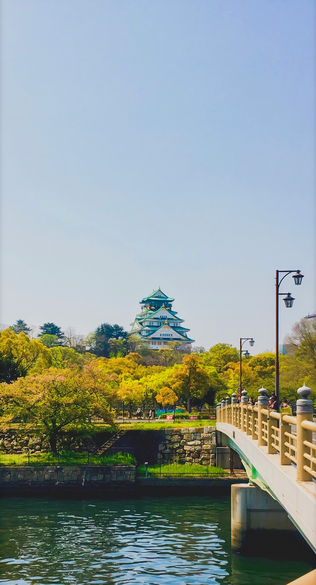

OSAKA
Osaka is Japan’s second city. As well as the central business hub in western Japan, Osaka has been at the heart of Japan’s cultural and economical development for hundreds of years.
With relics from the city’s past still standing, Osaka is a city where you can truly feel Japan’s history.
Osaka is also the city of comedy. With comedy styles such as manzai originating in Osaka and gaining popularity throughout the rest of the country, Osaka has taken center stage as the city with the friendliest and funniest people in Japan.
Main Attraction
Osaka Castle
Osaka Castle, or “Osaka-jo” in Japanese, is certainly one of the most famous landmarks in Japan, and for good reason.
This five-story castle is one of the most visually spectacular creations in the country, with a history that dates back almost 450 years
One of the most fascinating features of Japanese culture is the sheer breadth of its rich history – across the country there are thousands of shrines, temples and castles dating back literally hundreds of years, each with an interesting story to tell
Year-round, travellers from within Japan and abroad make pilgrimages to many of these cultural landmarks to either pay respects, learn about Japanese history, or merely appreciate the stunningly intricate architecture for which Japan is globally renowned.


